|
4-4-2
|
Congo DR | 3 | - | 1 | Uzbekistan |
3-4-2-1
|
| HT 0-1 | ||||||
|
FIFA World CupSunday 28 June 2026
|
||||||
- Venue
- Atlanta Stadium
- Attendance
- 68,239
- Referee
- Felix Zwayer
Yellow card21'
N. Sadiki
Yellow card45+5'
N. Mbuku
Substitution51'
C. Bakambu
F. Mayele
Yellow card62'
S. Moutoussamy
Penalty scored68'
Y. Wissa
- 3
Substitution72'
N. Mbuku
M. Elia
B. Cipenga
T. Bongonda
S. Moutoussamy
N. Mukau
Goal78'
F. Mayele
Substitution83'
A. Masuaku
J. Kayembe
Goal90+1'
Y. Wissa
Assist: M. Elia
Whistle45+7'
45+7'
Goal10'
E. Shomurodov
Assist: A. Mozgovoy
Yellow card43'
A. Khusanov
Yellow card48'
S. Nasrullaev
- 2
Substitution59'
O. Shukurov
O. Khamrobekov
D. Khamdamov
A. G'aniev
Substitution73'
A. Fayzullayev
O. Urunov
- 2
Substitution82'
A. Mozgovoy
J. Iskanderov
J. Urozov
I. Sergeev
Congo DR | |
|---|---|
Goalkeeper | |
| 1 | L. Mpasi |
Defender | |
| 2 | A. Wan-Bissaka |
| 4 | A. Tuanzebe |
| 22 | C. Mbemba |
| 26 | A. Masuaku 83' |
Midfielder | |
| 7 | N. Mbuku 45+5'72' |
| 8 | S. Moutoussamy 62'72' |
| 9 | B. Cipenga 72' |
| 14 | N. Sadiki 21' |
Forward | |
| 17 | C. Bakambu 51' |
| 20 | Y. Wissa 68'90+1' |
Substitutes | |
| 6 | N. Mukau 72' |
| 10 | T. Bongonda 72' |
| 12 | J. Kayembe 83' |
| 13 | M. Elia 72' |
| 19 | F. Mayele 51'78' |
Uzbekistan | |
Goalkeeper | |
| 12 | A. Nematov |
Defender | |
| 2 | A. Khusanov 43' |
| 5 | R. Ashurmatov |
| 26 | J. Urozov 82' |
Midfielder | |
| 3 | K. Alijonov |
| 6 | A. Mozgovoy 82' |
| 7 | O. Shukurov 59' |
| 13 | S. Nasrullaev 48' |
| 17 | D. Khamdamov 59' |
| 22 | A. Fayzullayev 73' |
Forward | |
| 14 | E. Shomurodov 10' |
Substitutes | |
| 8 | J. Iskanderov 82' |
| 9 | O. Khamrobekov 59' |
| 11 | O. Urunov 73' |
| 19 | A. G'aniev 59' |
| 21 | I. Sergeev 82' |


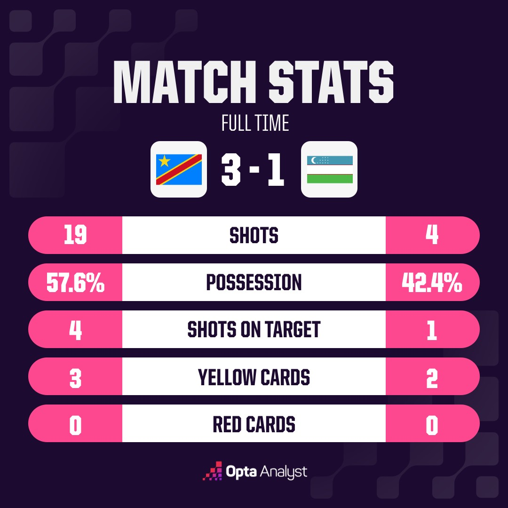
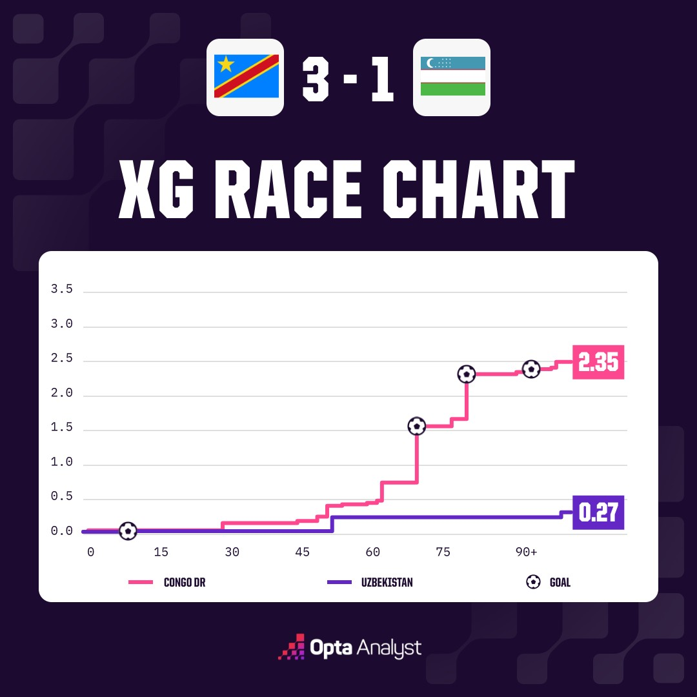
99'
Uzbekistan have lost their last 3 games in the FIFA World Cup, their longest losing streak in the competition (since at least 1965/1966).
99'
Uzbekistan attempted 3 shots in this game, their lowest total in a single match in the 2026 FIFA World Cup.
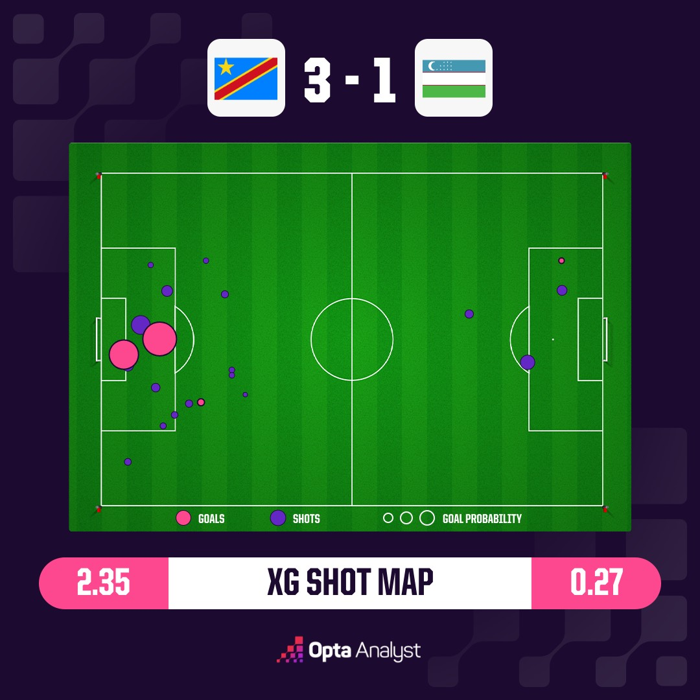
90+9'
Congo DR WIN! It’s all over at Atlanta Stadium, with Congo DR coming out on top 3-1 over Uzbekistan, thanks to goals from Yoane Wissa and Fiston Mayele.
90+8'
Abdukodir Khusanov goes in on Fiston Mayele and concedes a foul. The free-kick is not in a particularly dangerous area from Uzbekistan’s viewpoint, though.
90+6'
MISS! A shot from Théo Bongonda ends up being off target. They might have done a bit better with that one, but it remains Congo DR 3-1 Uzbekistan.
90+5'
No luck! Ngal'ayel Mukau takes on a shot that, had they got it right, might have been set to test the goalkeeper, but instead it is sent off target and Uzbekistan come away unscathed.
90+5'
It’s backs to the wall now — Congo DR throwing everything into defending their advantage, with a flurry of crucial interventions.
90+1'
Meschack Elia has assisted his first goal in the 2026 FIFA World Cup.
90+1'
Yoane Wissa has scored his third goal of the 2025 FIFA World Cup this edition, more than any other Congo DR player.
90+1'
GOAL! Yoane Wissa scores, and Congo DR are now well in front – surely they will go on and see this one out now? It seems a long way back for Uzbekistan, with Congo DR well in control of this match.
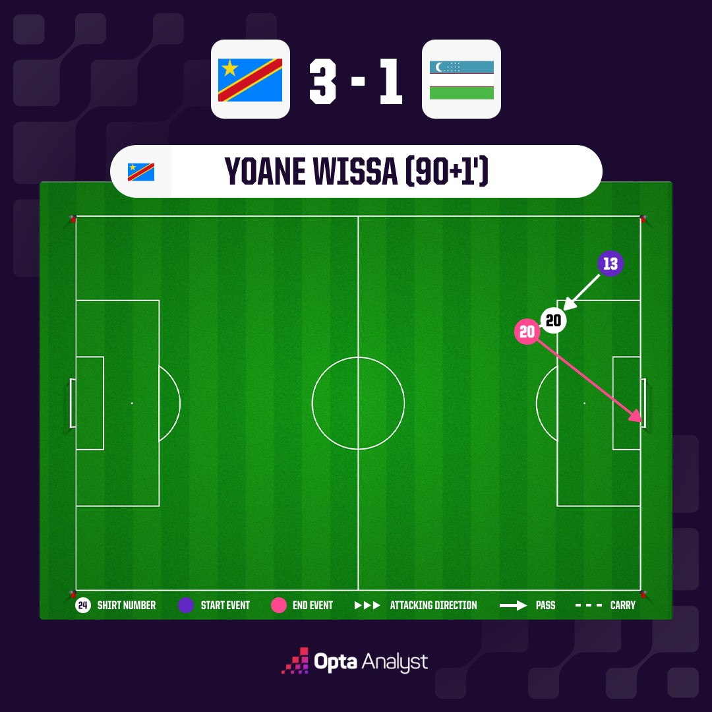
90+1'
MISS! The score remains 2-1, with Uzbekistan relieved after Congo DR’s Fiston Mayele goes for goal but sends their attempt off target. Not one to write home about, that one.
90+1'
A free-kick to Congo DR, as Aziz G'aniev goes in and fouls Yoane Wissa. However, Uzbekistan will not mind giving one away in this area too much, with plenty of distance to their goal.
90+1'
It’s backs to the wall now — Congo DR throwing everything into defending their advantage, with a flurry of crucial interventions.
88'
A chance goes begging as Fiston Mayele gets off a shot that does not hit the target. They might have done better with that one, but instead it is a goal-kick to Uzbekistan.
88'
This game is certainly in a bit of a lull now, with neither team having had an attempt at goal in the past 10 minutes. It could do with something to spark it into life. Uzbekistan have had more possession during the quiet spell, but are yet to do much with it.
84'
Still behind, but Uzbekistan are refusing to roll over - defensive urgency rising as they fend off more pressure and push for a late turnaround.
83'
A substitution for Congo DR sees Arthur Masuaku replaced by Joris Kayembe. There does not appear to be any obvious sign of an injury, so that is a tactical switch.
82'
It's all hands on deck for Congo DR as they defend their lead, making a wave of critical blocks and clearances
82'
Uzbekistan are making a tactical change. Jakhongir Urozov is leaving the field and in their place comes Igor Sergeev – we will soon see if this switch has the desired impact.
82'
A substitution for Uzbekistan sees Akmal Mozgovoy replaced by Jamshid Iskanderov. There does not appear to be any obvious sign of an injury, so that is a tactical switch.
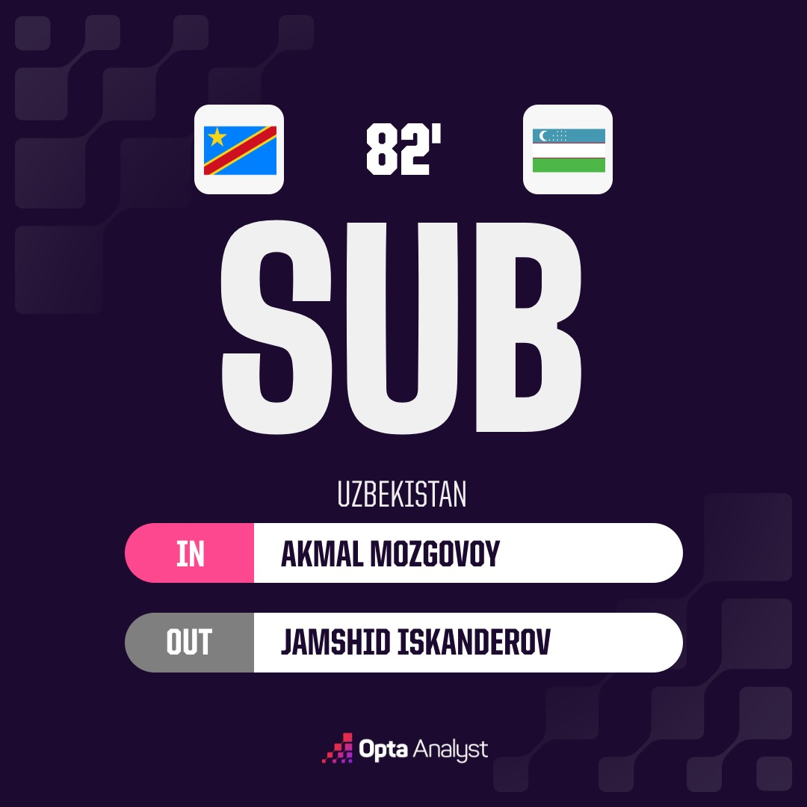
81'
It has been 30 minutes since Uzbekistan last attempted a shot in this game.
78'
Fiston Mayele has scored his first goal in the 2026 FIFA World Cup.
78'
GOAL! Will that be the winner for Congo DR? They have gone ahead in the closing stages thanks to Fiston Mayele, who kept his cool to finish from inside the area. Will they hold on, or can Uzbekistan fight back?
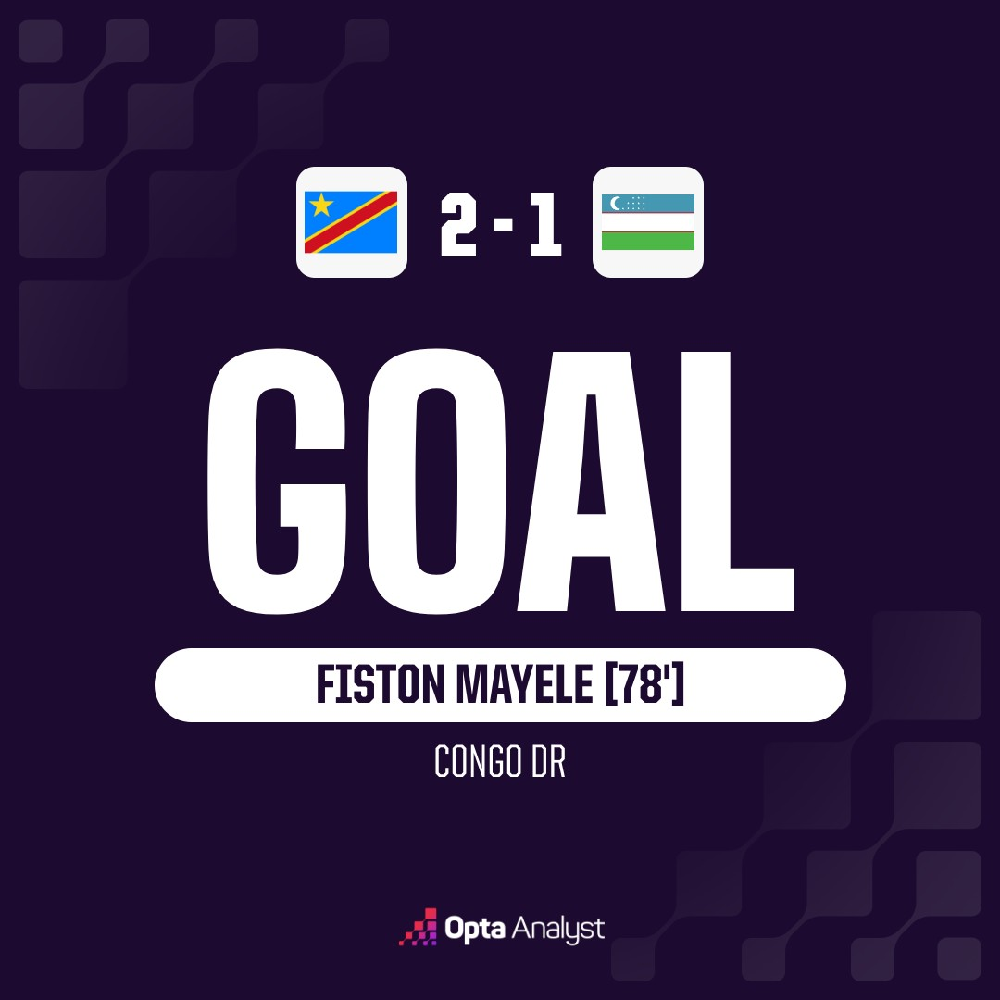
78'
That is a disappointing effort from Meschack Elia, who went for glory but got their attempt wrong, and the shot sailed off target. A frustrating moment for Congo DR.
76'
With 15 minutes left to play, plus stoppage time, it is Congo DR who have had the better of the possession, with 64.12%. Uzbekistan, on the other hand, have had 35.88% of the ball so far.
75'
Congo DR have attempted the last 6 shots in this game, Uzbekistan last shot was taken by Eldor Shomurodov in the 51st minute.
75'
No luck! Fiston Mayele takes on a shot that, had they got it right, might have been set to test the goalkeeper, but instead it is sent off target and Uzbekistan come away unscathed.
73'
Abbosbek Fayzullayev’s match is over as Uzbekistan decide to make a substitution. Oston Urunov enters the field in what looks like a tactical change.
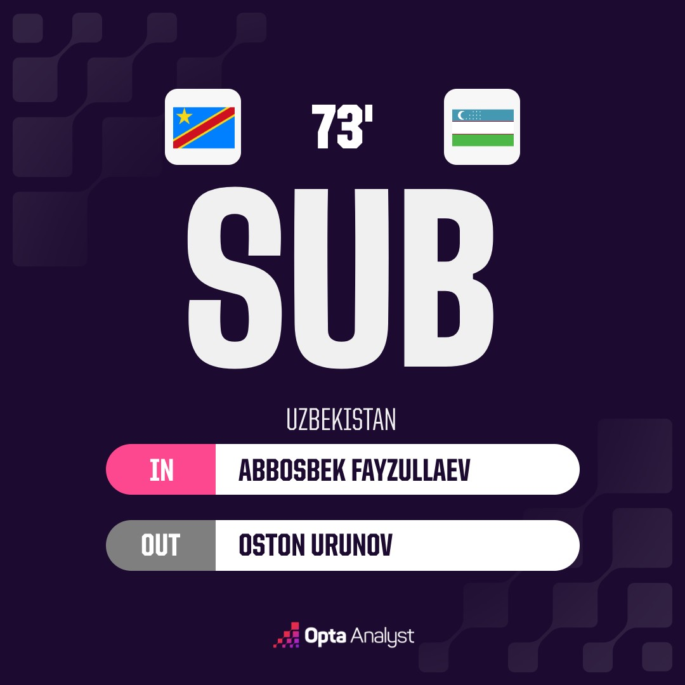
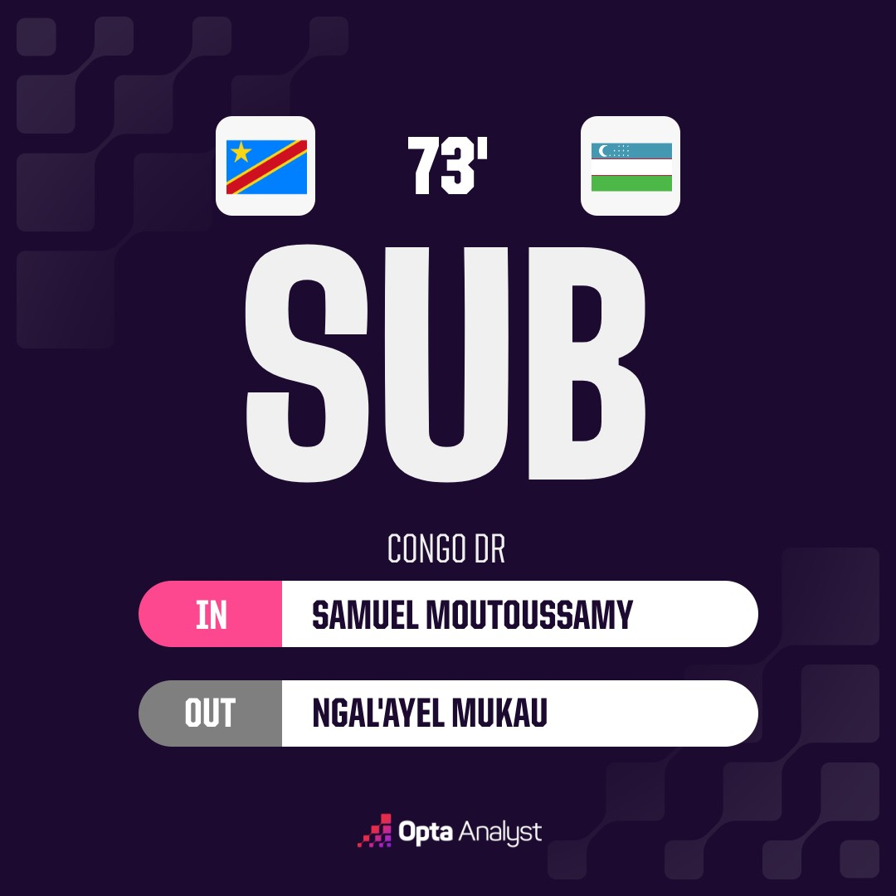
72'
Samuel Moutoussamy’s match is over as Congo DR decide to make a substitution. Ngal'ayel Mukau enters the field in what looks like a tactical change.
72'
Congo DR are making a tactical change. Brian Cipenga is leaving the field and in their place comes Théo Bongonda – we will soon see if this switch has the desired impact.
72'
Substitution! Meschack Elia replaces Nathanaël Mbuku for Congo DR as the manager shuffles the pack. Can Meschack Elia make an impression as this match continues?
70'
Free-kick! A foul from Eldor Shomurodov on Nathanaël Mbuku. It is well away from Uzbekistan’s goal, so it is unlikely to result in a chance for Congo DR.
68'
Yoane Wissa has attempted 5 shots, his highest total in a single match in the FIFA World Cup.
68'
Yoane Wissa has scored his second goal in the 2026 FIFA World Cup, netting for the first time since 17th June 2026 against Portugal.
68'
Goal! Yoane Wissa keeps cool from the penalty spot and calmly converts from 12 yards to restore parity. The match is all square at 1-1.
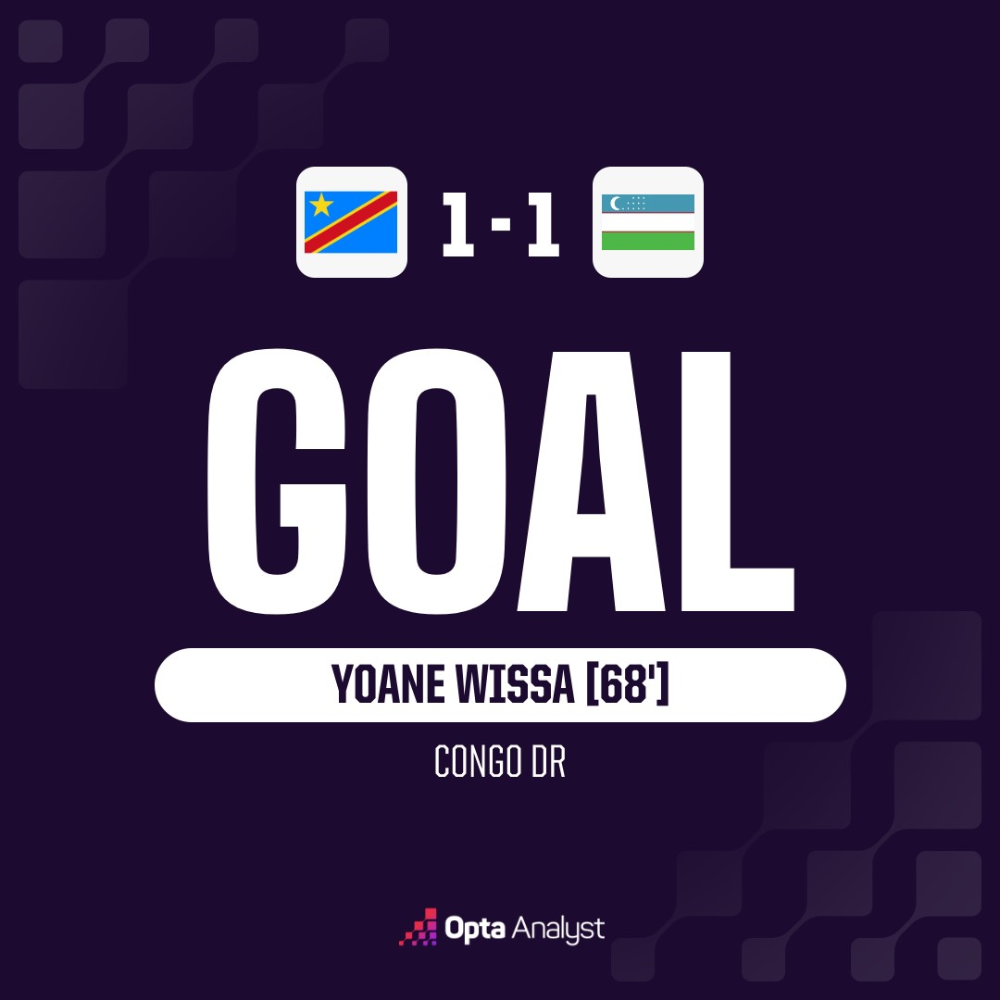
66'
Chance for Congo DR to get back into this? There’s a penalty now for Congo DR following Abdukodir Khusanov’s foul. Uzbekistan were in control, but that control might be about to be relinquished.
66'
Just over an hour played, so let’s check on the shot count for each side. Congo DR have had 10, getting 1 on target. Uzbekistan, meanwhile, have had 1 effort on target, and 3 overall.
65'
It's all hands on deck for Uzbekistan as they defend their lead, making a wave of critical blocks and clearances
64'
Still behind, but Congo DR are refusing to roll over - defensive urgency rising as they fend off more pressure and push for a late turnaround.
62'
Eldor Shomurodov goes in on Arthur Masuaku and concedes a foul. The free-kick is not in a particularly dangerous area from Uzbekistan’s viewpoint, though.
62'
Yellow card! Samuel Moutoussamy will have to be careful from now on after they are cautioned.
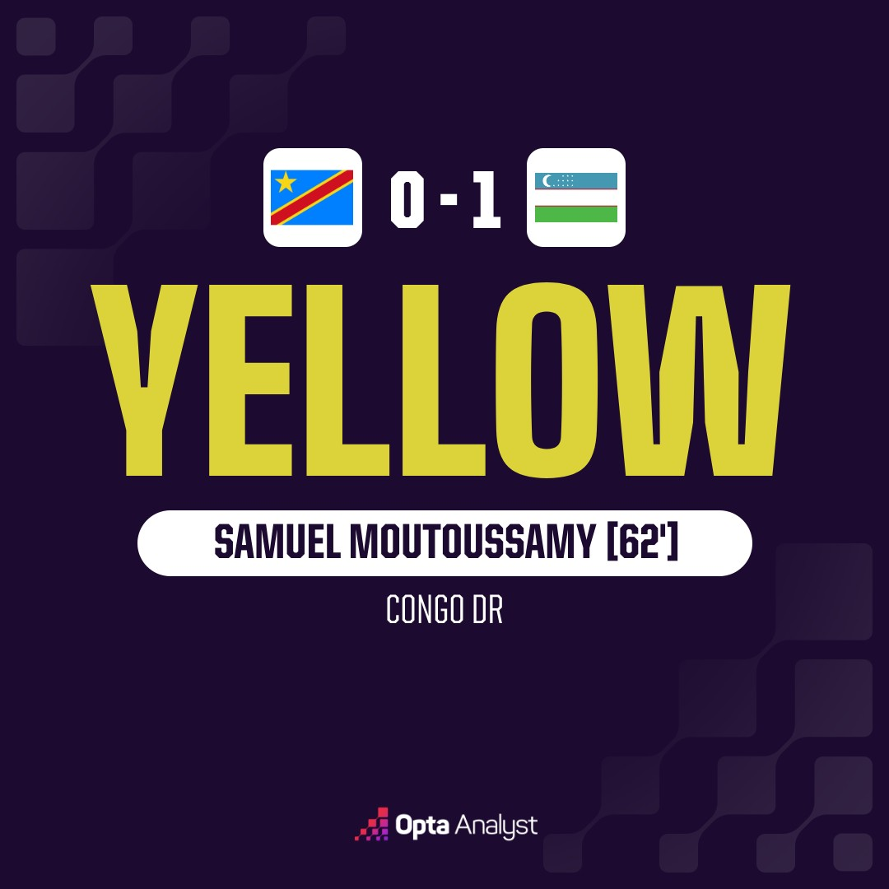
62'
A foul from Samuel Moutoussamy on Akmal Mozgovoy sees Uzbekistan win a free-kick, but it is not in a dangerous position, so Congo DR should be confident they can defend it easily enough.
61'
WHAT A MISS! Oh dear, oh dear, that is an awful attempt from Yoane Wissa, as a huge chance for Congo DR to score the goal they need goes begging. What a let off for Uzbekistan, though. They will have to defend better than that from here on out!
60'
Congo DR are having plenty of the ball, with 74.06% possession in the last 15 minutes. However, they have been unable to transfer that possessional dominance into a goal during that period.
60'
MISS! The score remains 0-1, with Uzbekistan relieved after Congo DR’s Fiston Mayele goes for goal but sends their attempt off target. Not one to write home about, that one.
59'
Great defending from Uzbekistan, who are staying organised and winning key battles to preserve their lead.
59'
Uzbekistan are making a tactical change. Dostonbek Khamdamov is leaving the field and in their place comes Aziz G'aniev – we will soon see if this switch has the desired impact.
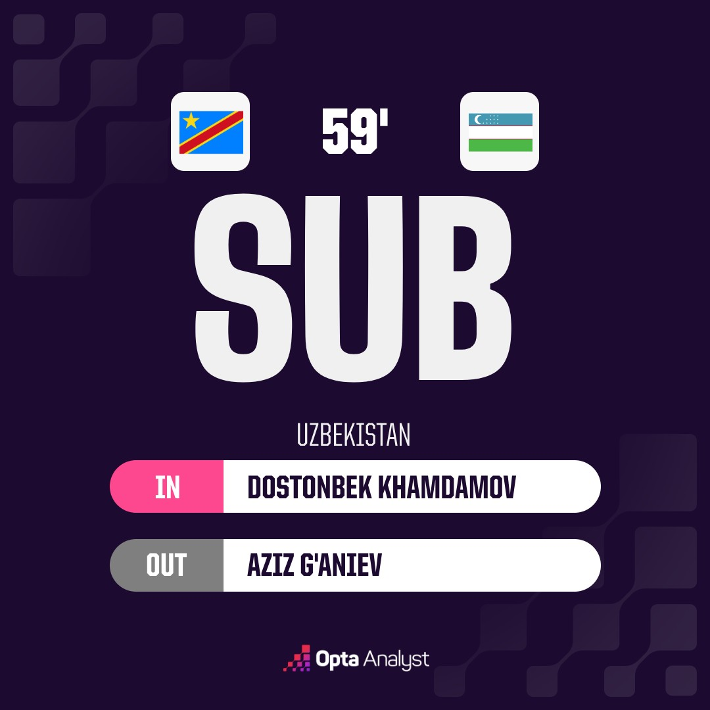
59'
Otabek Shukurov’s match is over as Uzbekistan decide to make a substitution. Odiljon Khamrobekov enters the field in what looks like a tactical change.
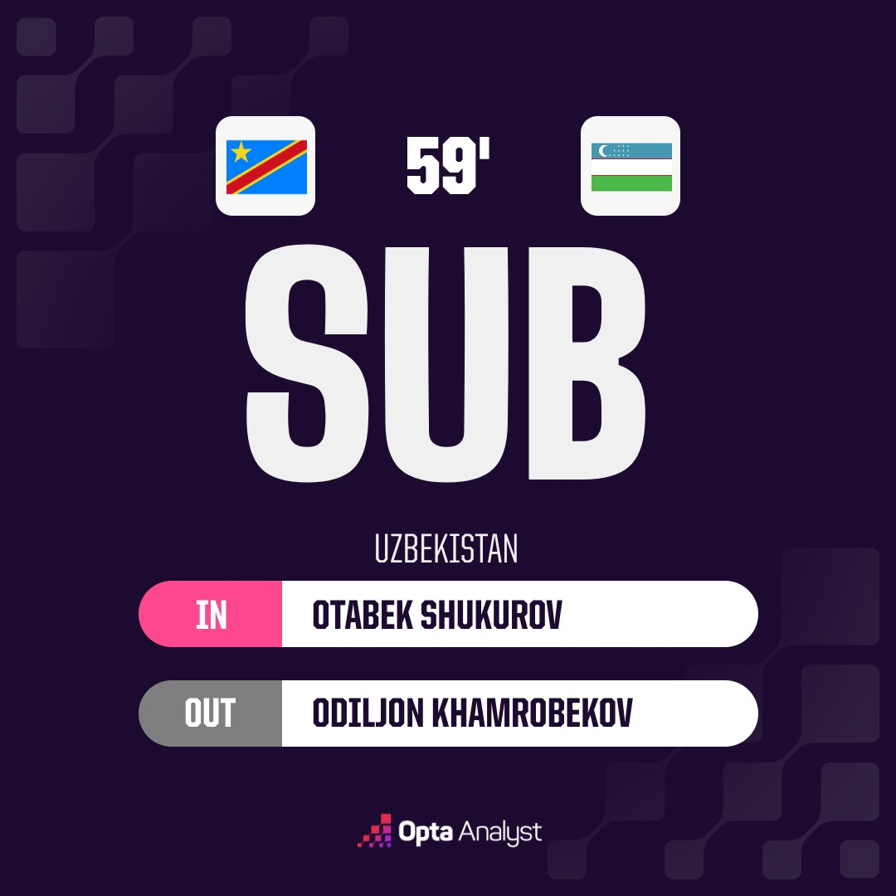
58'
That’s offside! A switched-on defensive line from Uzbekistan, as they step up at the right time to catch Fiston Mayele offside, and the assistant referee’s flag is up.
58'
SAVE! A shot from outside the box by Congo DR Nathanaël Mbuku was heading in, but Uzbekistan Abduvokhid Nematov keeps it out with a smart stop.
53'
A chance goes begging as Brian Cipenga gets off a shot that does not hit the target. They might have done better with that one, but instead it is a goal-kick to Uzbekistan.
53'
Excellent defensive work from Uzbekistan; their organization and success in key duels are effectively safeguarding their lead.
51'
A substitution for Congo DR sees Cédric Bakambu replaced by Fiston Mayele. There does not appear to be any obvious sign of an injury, so that is a tactical switch.
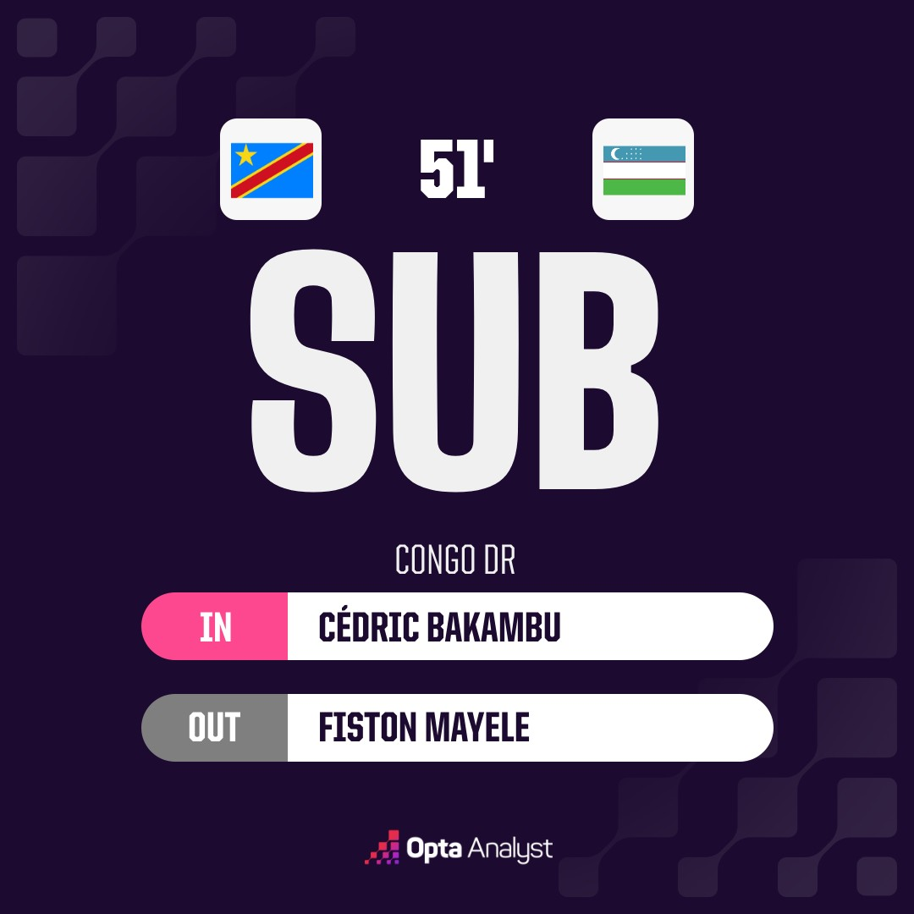
51'
No luck! Eldor Shomurodov takes on a shot that, had they got it right, might have been set to test the goalkeeper, but instead it is sent off target and Congo DR come away unscathed.
50'
That is a disappointing effort from Yoane Wissa, who went for glory but got their attempt wrong, and the shot sailed off target. A frustrating moment for Congo DR.
48'
MISS! A shot from Brian Cipenga ends up being off target. They might have done a bit better with that one, but it remains Congo DR 0-1 Uzbekistan.
48'
Yellow card! Sherzod Nasrullaev will have to be careful from now on after they are cautioned.
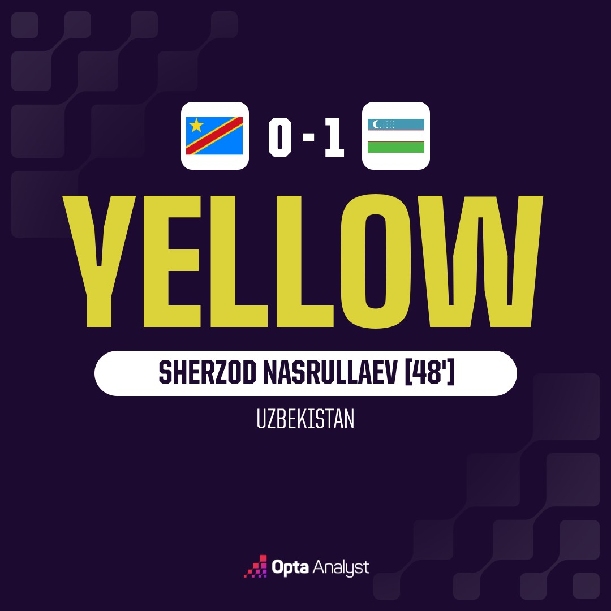
48'
A rash challenge from Sherzod Nasrullaev, who sends Nathanaël Mbuku tumbling, giving Congo DR a free-kick. It is not in a threatening position, but it gives them a chance to get back on the ball.
47'
A free-kick to Congo DR, as Abbosbek Fayzullayev goes in and fouls Axel Tuanzebe. However, Uzbekistan will not mind giving one away in this area too much, with plenty of distance to their goal.
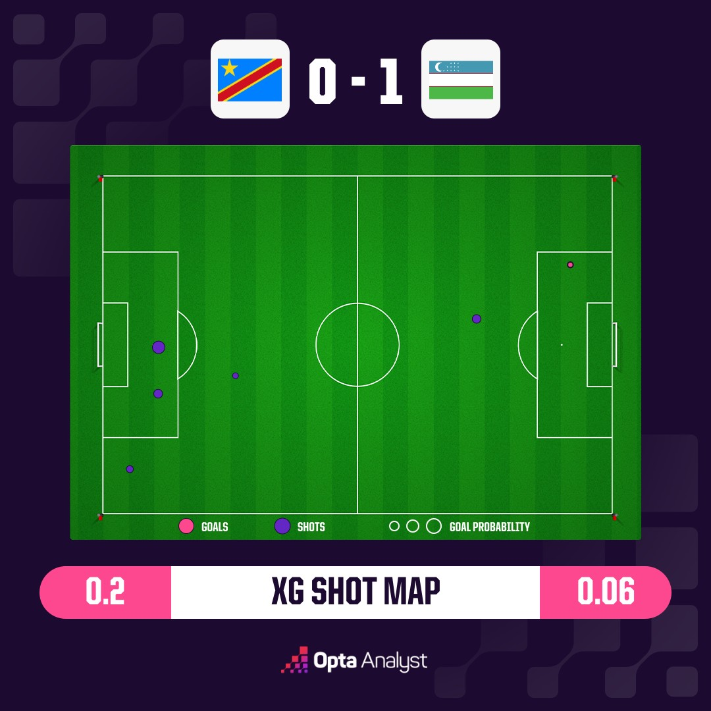
45+8'
Half-time! We reach the interval at Atlanta Stadium and it is Uzbekistan who have a 0-1 lead over Congo DR. Can they hold on and see this out in the second half?
45+6'
That is a disappointing effort from Abbosbek Fayzullayev, who went for glory but got their attempt wrong, and the shot sailed off target. A frustrating moment for Uzbekistan.
45+5'
Yellow card! Nathanaël Mbuku will have to be careful from now on after they are cautioned.
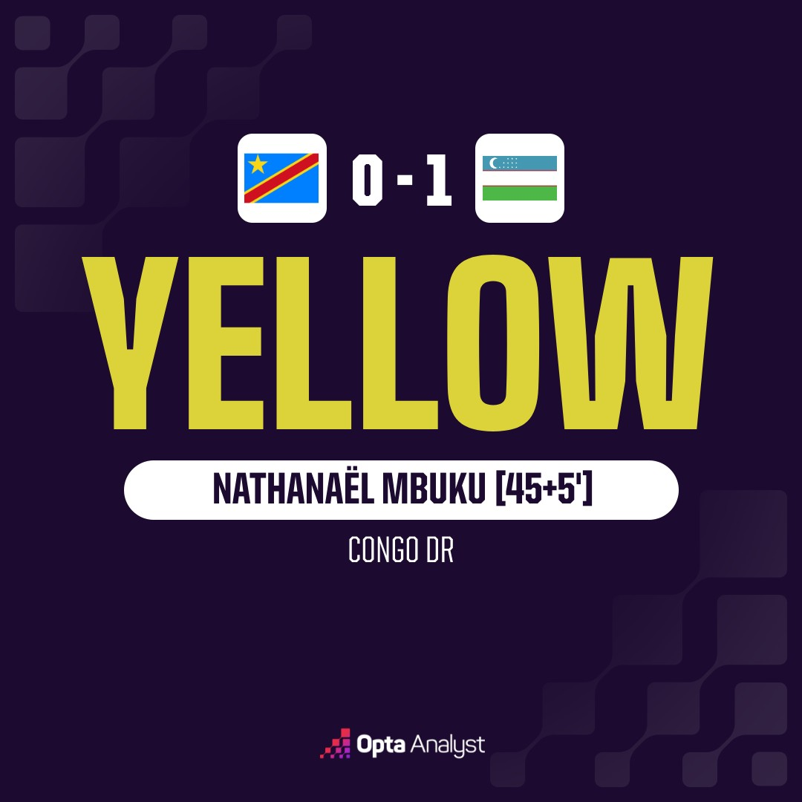
45+4'
Foul! A free-kick now in a dangerous area for Uzbekistan, after Abbosbek Fayzullayev is fouled by Nathanaël Mbuku. Can Uzbekistan make the most of this opportunity?
45+3'
That is a disappointing effort from Chancel Mbemba, who went for glory but got their attempt wrong, and the shot sailed off target. A frustrating moment for Congo DR.
45+3'
Good play from Chancel Mbemba, who draws a foul from Abbosbek Fayzullayev to hand Congo DR a free-kick in a dangerous position. Will they create something from this set-piece?
45+3'
Great defending from Uzbekistan, who are staying organised and winning key battles to preserve their lead.
45+1'
There is plenty of possession for Congo DR, with 66.36% compared to Uzbekistan 33.64% in the last 15 minutes. However, Congo DR have not been able to turn that dominance of the ball into a goal.
44'
Offside! Cédric Bakambu thought they were through on goal, but the Uzbekistan defence stepped up in time to catch them offside, and the assistant referee puts their flag up.
44'
BLOCK! An intervention from Eldor Shomurodov might have just prevented a goal, with the defending player getting in the way of an attempt from Brian Cipenga. Solid defending there!
43'
That is a booking for Abdukodir Khusanov, who has received their first yellow card. They are not happy with the decision, but it is done now, and they will have to be careful for the rest of this game.
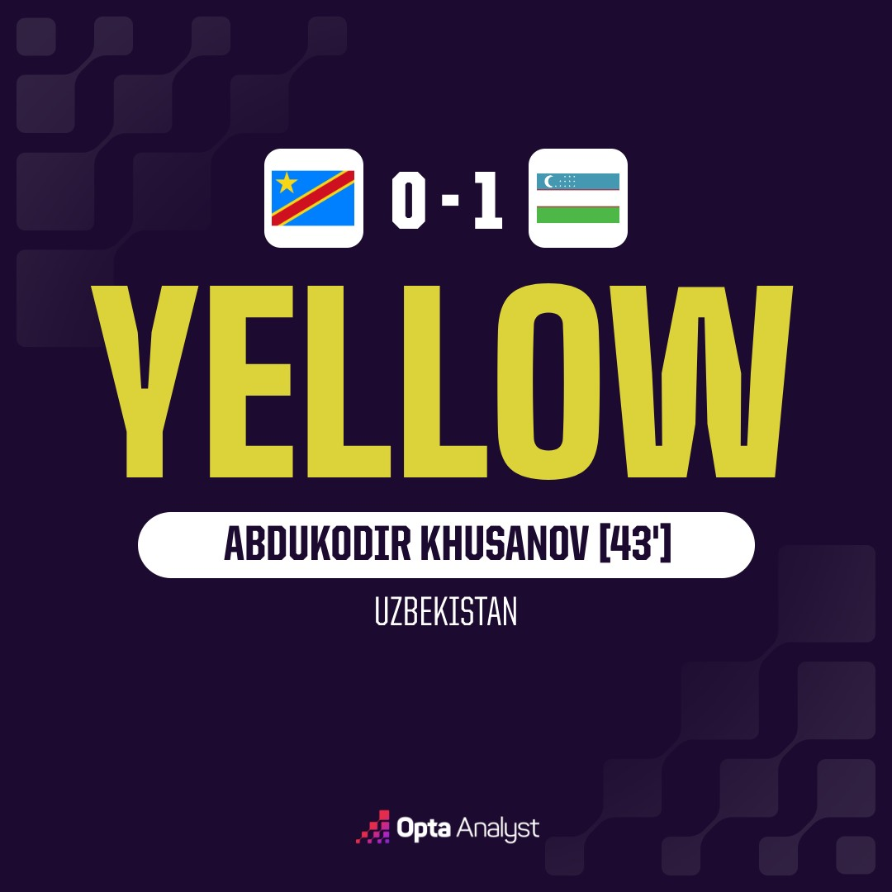
43'
This could be a chance for Congo DR, after Abdukodir Khusanov fouls Yoane Wissa, handing them a free-kick in a threatening area. A good set-piece from here could really test the Uzbekistan defense!
42'
Corner! The ball goes behind and now Congo DR will aim to deliver a good ball into the penalty area and test that Uzbekistan defence, which has been frustrating them in recent minutes.
42'
Set-piece after set-piece - Congo DR are turning up the pressure as they search for a breakthrough.
41'
Foul! A free-kick now in a dangerous area for Congo DR, after Noah Sadiki is fouled by Dostonbek Khamdamov. Can Congo DR make the most of this opportunity?
41'
Congo DR have not had a shot on target so far in this game.
40'
It has been 30 minutes since Uzbekistan last attempted a shot in this game.
40'
A free-kick in a dangerous position now for Congo DR, after a foul from Sherzod Nasrullaev on Nathanaël Mbuku. Can Congo DR make Uzbekistan pay for that rashness from Sherzod Nasrullaev?
40'
Neither team has had a shot in the past 10 minutes, as this match just enters something of a down period. Congo DR have seen more of the ball, with 57 per cent possession, but Uzbekistan are keeping them away from goal. There is still a chance the match will spark into life, though.
39'
Despite trailing, Congo DR are showing real defensive grit, digging in and stopping further damage as they try to build a platform.
34'
A rash challenge from Abbosbek Fayzullayev, who sends Axel Tuanzebe tumbling, giving Congo DR a free-kick. It is not in a threatening position, but it gives them a chance to get back on the ball.
31'
The Uzbekistan defence steps up in time and there is a frustration for Cédric Bakambu, who thought they were through until the flag goes up to signal offside.
29'
There is plenty of possession for Congo DR, with 79.52% compared to Uzbekistan 20.48% in the last 15 minutes. However, Congo DR have not been able to turn that dominance of the ball into a goal.
29'
MISS! A shot from Yoane Wissa ends up being off target. They might have done a bit better with that one, but it remains Congo DR 0-1 Uzbekistan.
28'
There is plenty of possession for Congo DR, with 65.79% compared to Uzbekistan’s 34.21% in the last 15 minutes. However, Congo DR have not been able to turn that dominance of the ball into a goal or even a shot during the period – which will be a huge frustration for their coach.
27'
Strong early signals from Uzbekistan at the back — calm and commanding as they break up attacks with ease.
23'
A foul from Yoane Wissa on Akmal Mozgovoy sees Uzbekistan win a free-kick, but it is not in a dangerous position, so Congo DR should be confident they can defend it easily enough.
21'
Yellow card! Noah Sadiki will have to be careful from now on after they are cautioned.
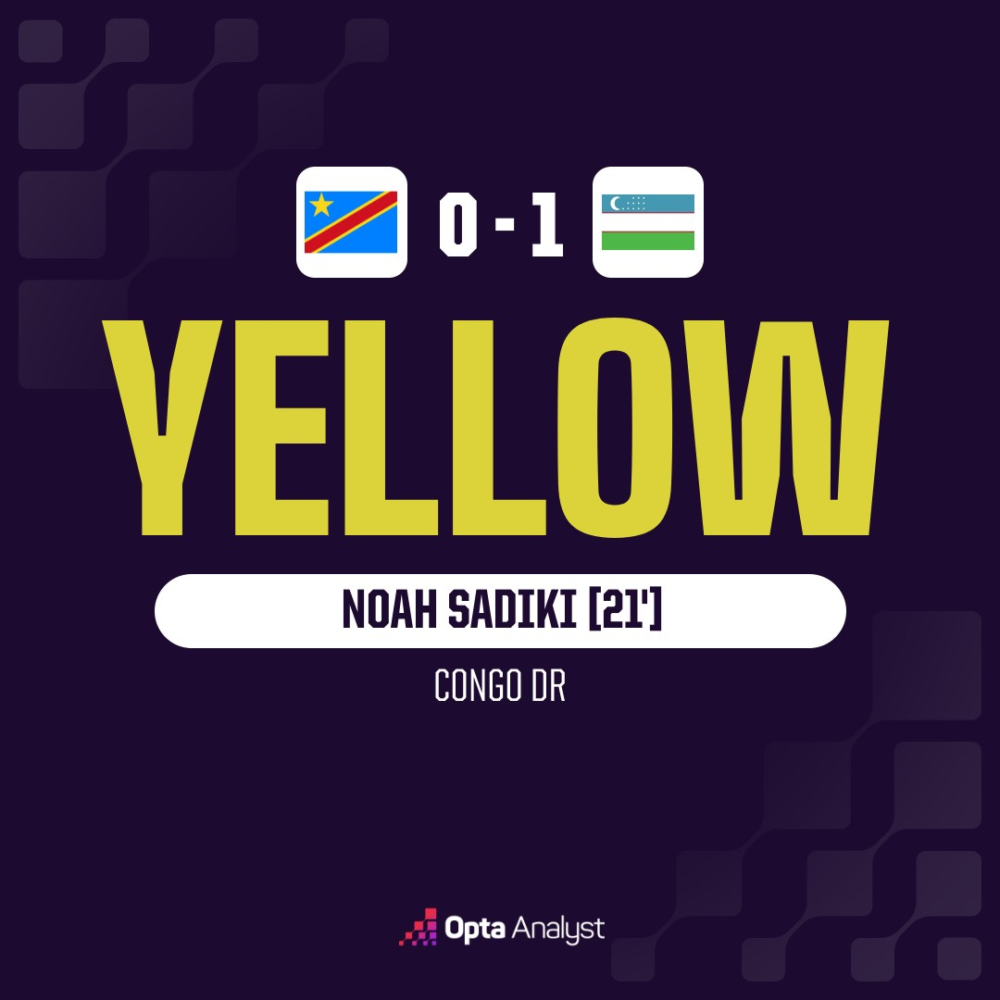
20'
Noah Sadiki goes in on Otabek Shukurov and concedes a foul. The free-kick is not in a particularly dangerous area from Congo DR’s viewpoint, though.
20'
Not much goalmouth action to speak of in this period of the game, with no attempts made from either side. This game could spark at any moment, however. It is Congo DR who have had more of the ball, controlling 61 per cent possession in the last 10 minutes.
18'
Decision overturned! The referee’s original call is deemed to be wrong by VAR, and after a check, it has been changed. The technology has played a major role there.
18'
VAR! The technology is now intervening – will the referee’s decision be overturned, or will it stand? Let’s wait and see.
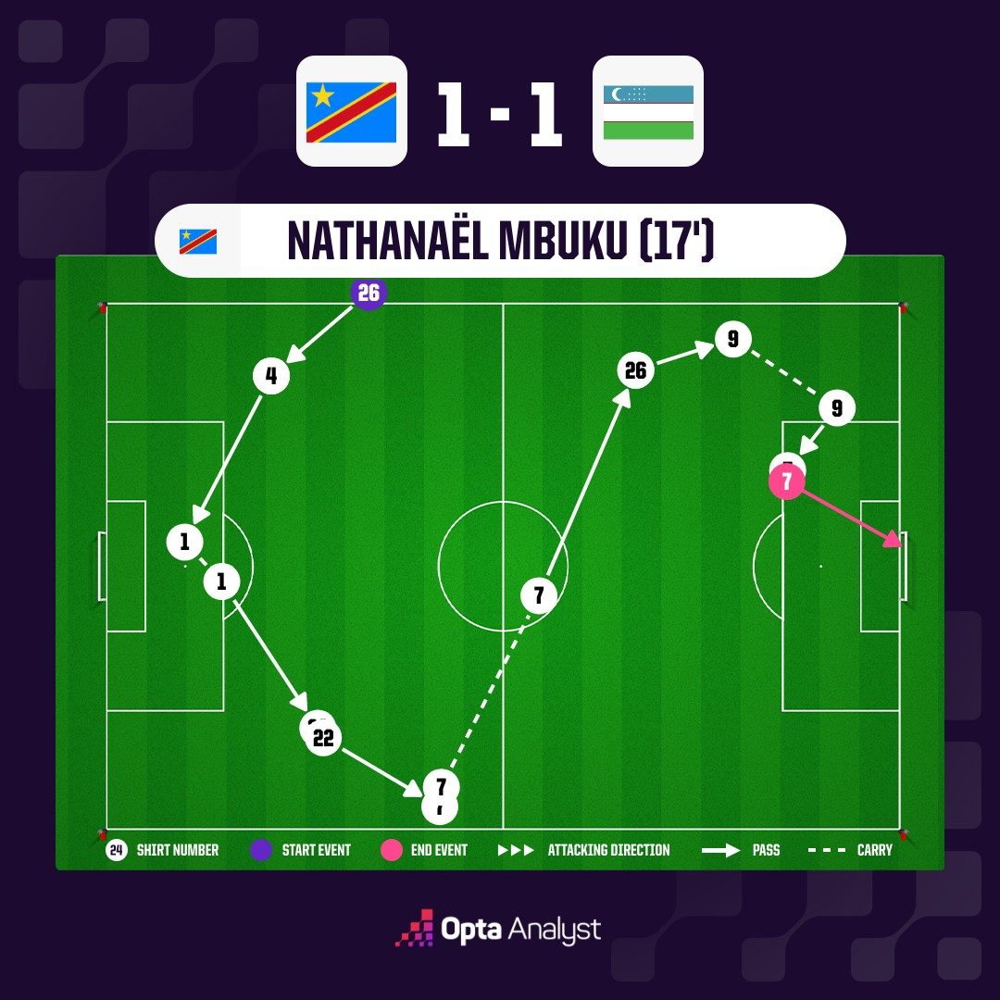
17'
Nathanaël Mbuku goes in on Sherzod Nasrullaev and concedes a foul. The free-kick is not in a particularly dangerous area from Congo DR’s viewpoint, though.
16'
Congo DR may be behind, but they’re battling hard defensively to stop the gap from widening. A gritty response at the back.
16'
Uzbekistan's defense is looking formidable early on, calmly and authoritatively dismantling opposition attacks.
15'
A free-kick to Congo DR, as Abbosbek Fayzullayev goes in and fouls Arthur Masuaku. However, Uzbekistan will not mind giving one away in this area too much, with plenty of distance to their goal.
14'
Otabek Shukurov goes in on Noah Sadiki and concedes a foul. The free-kick is not in a particularly dangerous area from Uzbekistan’s viewpoint, though.
11'
Strong early signals from Uzbekistan at the back — calm and commanding as they break up attacks with ease.
10'
Akmal Mozgovoy has assisted his first goal in the 2026 FIFA World Cup.
10'
Eldor Shomurodov has scored his first goal in the 2026 FIFA World Cup.
10'
GOAL! Uzbekistan have gone in front! Eldor Shomurodov makes a dream start to the game by providing the early goal. Uzbekistan have the advantage now – how will Congo DR respond to falling behind in the early stages?
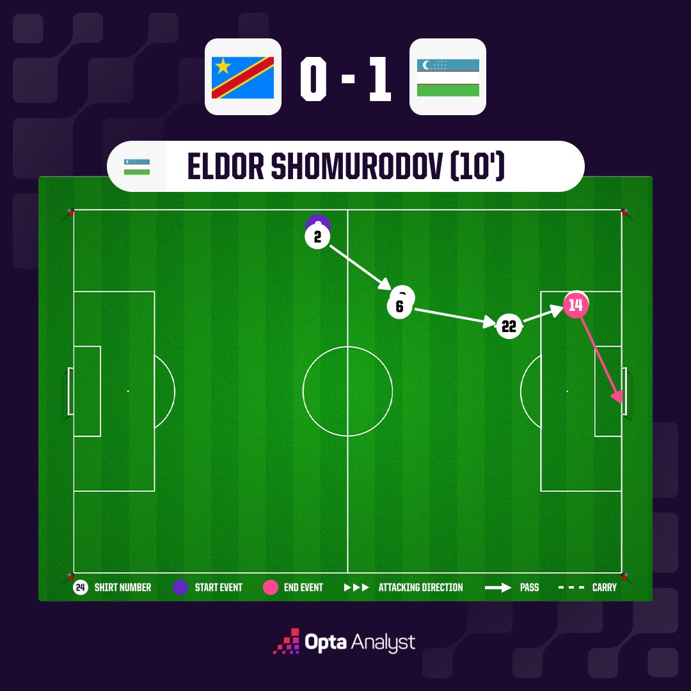
6'
It’s been tight so far, and Congo DR are making sure it stays that way with strong defensive discipline and well-timed clearances.
4'
A free-kick to Uzbekistan, as Nathanaël Mbuku goes in and fouls Sherzod Nasrullaev. However, Congo DR will not mind giving one away in this area too much, with plenty of distance to their goal.
3'
A free-kick to Congo DR, as Khojiakbar Alijonov goes in and fouls Noah Sadiki. However, Uzbekistan will not mind giving one away in this area too much, with plenty of distance to their goal.
2'
No luck! Yoane Wissa takes on a shot that, had they got it right, might have been set to test the goalkeeper, but instead it is sent off target and Uzbekistan come away unscathed.
1'
No luck – it’s offside! Dostonbek Khamdamov looked to dart in behind and get on the end of a pass, yet they just went too early, and the flag is up to signal offside.
1'
Up and running! Uzbekistan have kicked off and this FIFA World Cup match is now under way at Atlanta Stadium. Let’s hope for an intriguing battle on the pitch.
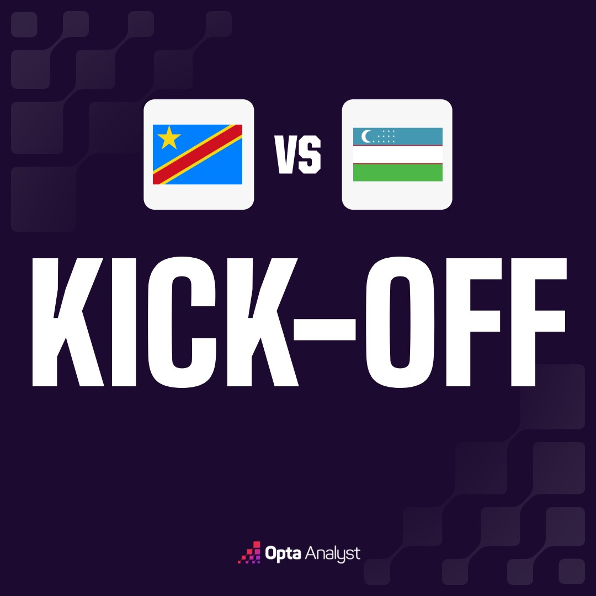
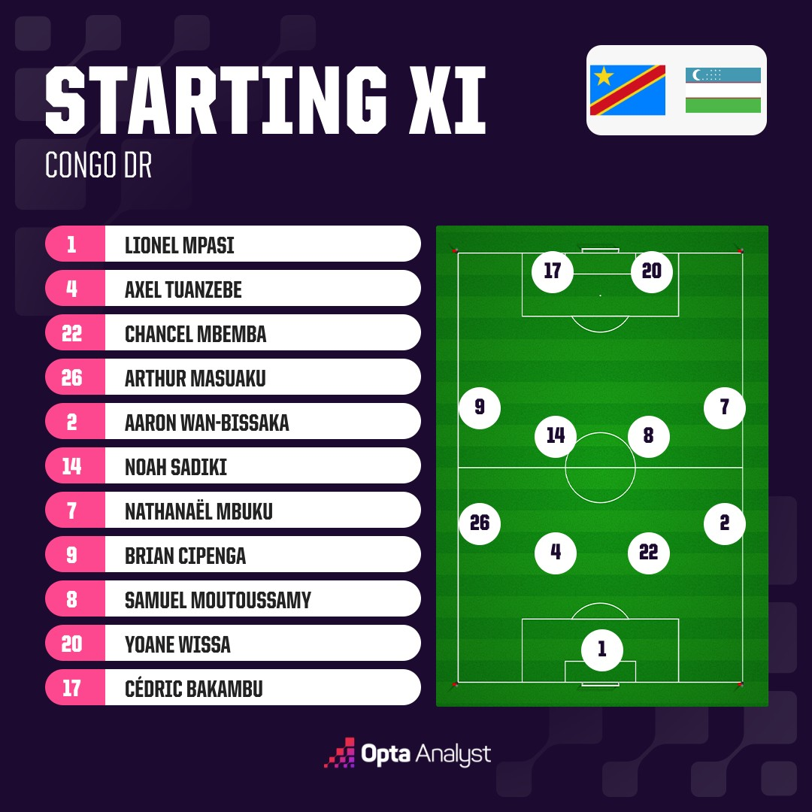
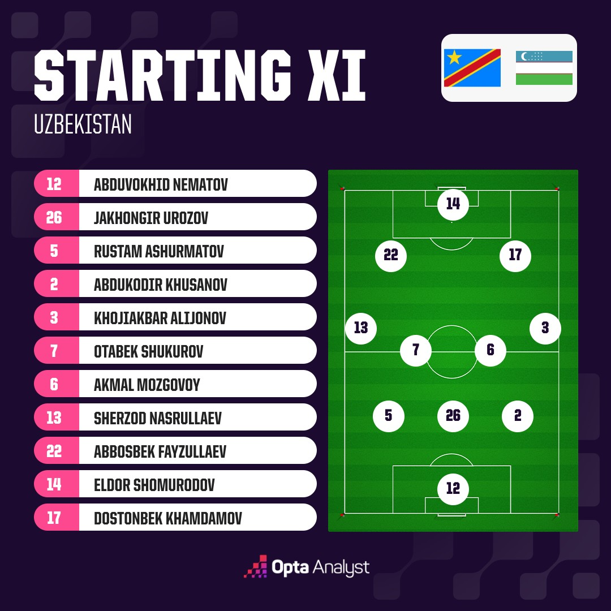
There have been fewer than 3 goals scored in total in each of Congo DR's last 4 games
Congo DR take on Uzbekistan on Saturday at Atlanta Stadium in the third round of the group stage at the 2026 Canada/Mexico/USA FIFA World Cup.
Congo DR slumped to their first defeat in the competition this season, falling 1-0 against Colombia in their last group stage match on June 23. They are winless in their last four games in all competitions. In seven games this year, they have two wins, two draws, and three losses.
Uzbekistan suffered a 5-0 defeat against Portugal in their last group stage game, a June 23 clash at Houston Stadium, their fourth straight defeat. In 2026, they have won two and lost four.
Congo DR are third in the group on one point, while Uzbekistan's zero points place them fourth. Congo DR are currently out of the knockout round places but still on for a place in the round of 32, while Uzbekistan are in line to be eliminated.
Leading the group on six points are Colombia, who have clinched their place in the Round of 32. Portugal are also in a Round of 32 spot, sitting second on four points.
In attack, Yoane Wissa has been the key performer for Congo DR in World Cup play. He leads the team with one goal. Uzbekistan have been spearheaded in the final third by Abbosbek Fayzullaev, who has netted once in the current World Cup campaign.
In their last six matches in all competitions, Congo DR have won two, drawn two and lost two. The Congo DR side scored five and conceded four over that period, scoring first in two of the six contests. They had two first-half goals, while their opponents netted once in the first 45 minutes. Uzbekistan have won two and lost four in their last six. The Uzbek side scored five and conceded 13 over that stretch, failing to score first in any of the six. All of their goals came after halftime, while their opponents netted five times before the break.
-
General
Possession 57.6% 57.59642.40442.4% Possession lost in defensive half 41 414343 Possession lost in middle third 57 576767 Duels 123 123123123 Duels success rate 47.2% 47.15451.2251.2% Aerial duels 35 353535 Aerial duels won 34.3% 34.28665.71465.7% Successful dribbles 11 1155 Fouls won 16 1666 Offsides 3 311 Corner awarded 2 244 -
Distribution
Passes 485 485355355 Long passes 60 605959 Long passes proportion (%) 12.4% 12.37116.6216.6% Passing accuracy 82.5% 82.47475.77575.8% Passes in opponents' half 260 260207207 Passing accuracy in opponents' half (%) 75.8% 75.76968.11668.1% Total passes in the final third 127 1279999 Passing accuracy in final third (%) 70.9% 70.86661.61661.6% Forward passes 327 327240240 Forward passes (%) 67.4% 67.42367.60667.6% Through balls 0 033 Final third entries 63 635151 Penalty area entries 33 332121 Total open play crosses 19 191212 Crosses 22 221616 Crossing accuracy 27.3% 27.27312.512.5% -
Attack
Goals 3 311 Shots 19 1933 Shots on target 4 411 Blocked shots 1 100 Headed shots 2 200 Shots outside the box 8 811 Shots inside the box 11 1122 Shots accuracy excluding blocked shots 22.2% 22.22233.33333.3% Shooting accuracy 21.1% 21.05333.33333.3% Key Passes 14 1422 -
Defence
Tackles 20 202929 Tackles success rate 65.0% 6562.06962.1% Clearances 25 253838 Interceptions 7 71212 Recoveries 64 645151 Attacking third recovery 3 344 Defensive third recovery 32 322525 Midfield third recovery 29 292222 Recoveries in attacking half (%) 4.7% 4.6887.8437.8% -
Discipline
Fouls conceded 6 61616 Yellow cards 3 322 Red cards 0 000